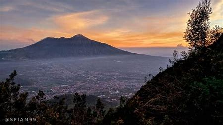
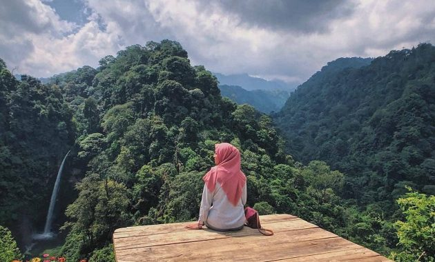
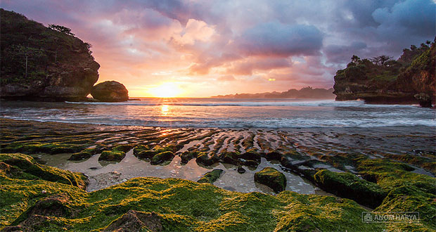
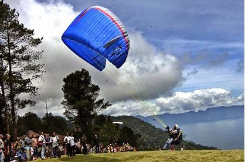
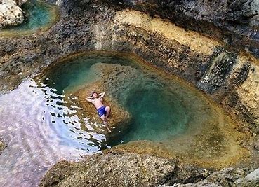

Gunung Panderman
Gunung Panderman merupakan tempat wisata alam di Malang dan sekitarnya yang cocok bagi Anda pecinta pendakian dan cocok juga untuk para pendaki pemula.
Gunung ini biasanya digunakan untuk media pemanasan dan latihan untuk para pecinta alam.
Gunung ini terletak di Dusun Toyomerto Kelurahan Songgokerto Desa Pesanggrahan, Batu. Gunung dengan ketinggian 2000 mdpl ini puncaknya memiliki nama Basundara.
Pulau Sempu

Banyak wisatawan yang datang kesana untuk camping di pantai yang bernama Segara Anakan.
Segara Anakan adalah pantai yang tersembunyi yang terletak di tengah pulau yang dikelilingi dengan tebing Kalau dilihat sekilas mirip dengan Pantai Phuket.
Pulau Sempu pada hakikatnya adalah Cagar Alam yang wajib dijaga kelestariannya. Jika anda akhirnya berkunjung disana, tolong tetap jaga kebersihan dan kelestraian tempat ini.
Tubing Wringinanom

Berada di Dusun Besuki, Desa Wringinanom, Kecamatan Poncokusumo. Kawasan ini menawarkan liburan dengan sensasi baru yakni tubing dengan memanfaatkan aliran sungai. Anda hanya menggunakan tub(ban) untuk menaklukan derasnya arus Sungai Amprong yang berbatu. Selain itu, di hulu sungai juga terdapat
Ditempat ini tersedia tracking motor trail dan camping ground. Dengan menggunakan peralatan kemanan dan tub, pemandu membawa wisatawan menyusuri perbukitan menuju titik awal meluncur. Adrenalin Anda nakal terpacu disaat mulai meluncur di aliran sungai yang deras.
Coban Pelangi
Coban pelangi terletak pada dua daerah berbeda. Yang pertama berada dibagian Pronojinowo,Lumajang dan di Gubuklakah,Kecamatan Poncokusumo,Malang
Secara umum Coban Pelangi belum terlalu familiar. Terlebih menuju lokasinya pun lumayan susah. Namun untuk para pendaki Gunung Semeru, air terjun ini justru bukan lokasi yang asing
Lokasi ini terletak persis di kaki Gunung Semeru, tepatnya pada ketinggian 1400m dari permukaan laut. Daerah ini sendiri merupakan bagian pengelolaan dari perum Perhutani Malang. Serta juga bagian dari Taman Nasional Bromo Tengger Semeru.
Omah Kayu

Ini dia tempat wisata baru favorit anak muda untuk narsis di sosmed. Disini pengunjung bisa melihat area persawahan dari ketinggian.Semilir angin khas kota Malang menambah nilai kenikmatan nongkrong di rumah kayu tersebut.Rumah kayu ini berasa di Kota Batu,Malang. Omah kayu sebenarnya adalah penginapan dengan konsep mirip rumah pohon. Jika anda hanya ingin duduk dan menikmati juga bisa.
Batu Bengkung
Pantai ini menyuguhkan panorama tebing karang yang indah dan ombak besar khas pantai selatan. Dan lagi keindahan sunset pantai ini sangat cantik dan mengagumkan. Apalagi saat airnya surut, Anda dapat mengabadikan karang sebagai foreground dengan latar belakang matahari yang terbenam eksotis.
Pantai ini termasuk salah satu tempat wisata camping di Malang favorit anak muda.
Wisata Paralayang
Salah satu tempat wisata di Malang yang menantang adrenalin yaitu Wisata Paralayang.Paralayang termasuk salah satu cabang olahraga ekstrem, itu kenapa wisata ini bisa juga disebut sebagai wisata menantang maut.
Tapi bagi anda penyuka adreanalin tentu berada di ketinggian sambil melihat panorama alam sangat menyenangkan.
Teluk Bidadari
Teluk Bidadari terletak di Pantai Mbehi,Desa Sumberbening,Bantur,Malang.
Teluk Bidadari adalah sebuah spot(genangan) berbentuk lingkaran dengan warna air biru kehijauan. Tempat ini cocok untuk anda yang ingin menghilangkan penat dari rutinitas. Selain itu, suasananya yang masih sangat sepi juga pas untuk rileks.